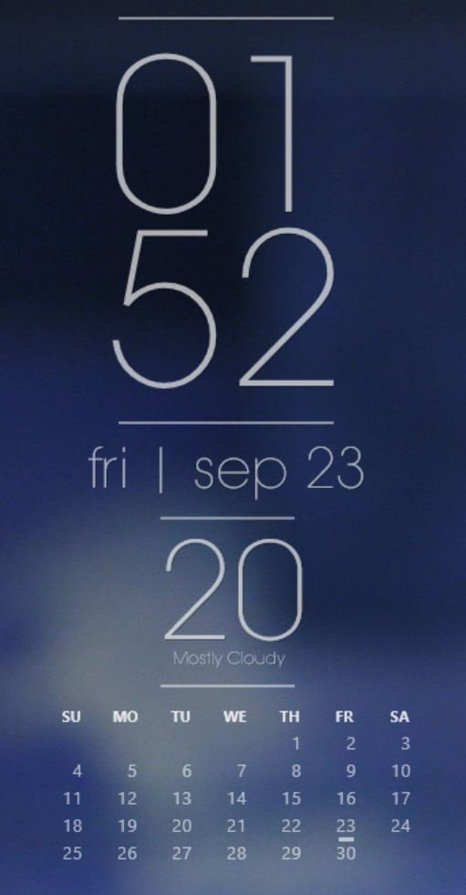

Rainmeter
 None of it is entirely original. I took a component or two from different skins because I liked the style, then made small adjustments (this includes fixing outdated parts, urls, and plugins, editing the picture used, changing the styling to match with each other or look nicer etc.). Currently, the skin has time, date, weather, calendar, and a music player control.This Website
Although this doesn't really count as 'Other Work', I spent a lot of time on this website. This website was my first time using HTML/CSS/JS.Employment Work
Note that the following isn't my property so I can't really provide any source or pictures
Private
An trading platform web app focused on industral metal products written using the Angular2 framework.I was responsible for the front end by myself, which included some complicated logic and technologies. Angular2 was also pretty new at the time so research wasn't always easy. From the project, I learnt about using custom web APIs hosted on an Apache/Tomcat server, using web sockets (socket.io) to communicate in real-time, Twitter's Bootstrap CSS library, node.js servers using Express, and SQL Server Management, as well as things relating to a real website such as auth and routing. From Angular2, I learnt how to use typescript, service/component modules, injectables, data binding, promises, observables, eventemitter etc.
AAFC
I worked on two things: the Canadian Agricultural Nitrogen Budget (CANB) model written in Fortran and EasyGrapher (a program which automates Excel to graph certain data files) written in VBA.I can't say I learnt many relevant skills from CANB, but from EasyGrapher, I learnt about modular programming, RegEx, GUI design and event handling, and Excel automation.